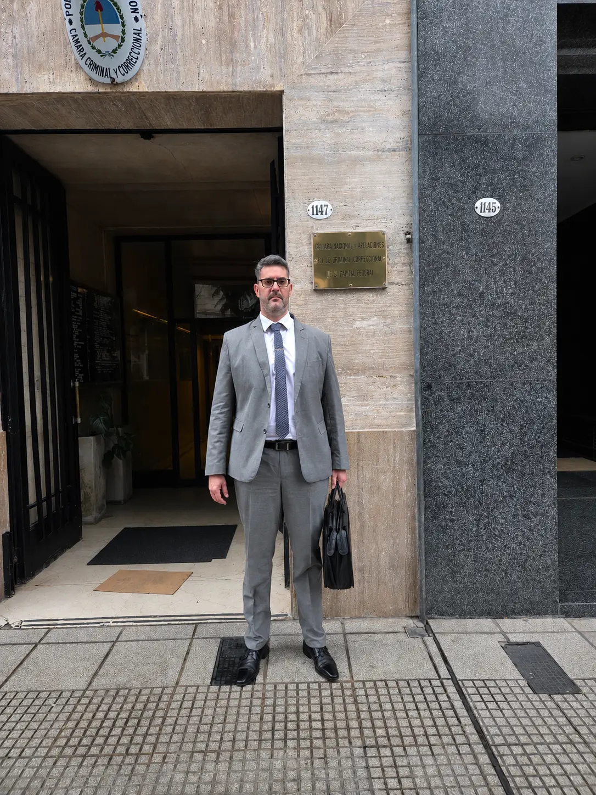

DERECHO PENAL
Una defensa técnica, desde el primer momento del proceso.
Intervención y asistencia en todas las etapas del proceso penal, con atención presencial en San Justo (PBA) y San Nicolás (CABA), y modalidad virtual. Cada caso se analiza con una estrategia propia, basada en sus circunstancias y particularidades — no hay dos casos iguales.
La atención se brinda con absoluta confidencialidad y discreción, mediante un acompañamiento personalizado durante todo el desarrollo del proceso.

Áreas de defensa
Detalle de los servicios dentro de Derecho Penal.
Defensas penales
Asistencia y defensa técnica en todas las etapas del proceso penal, desde el inicio de la causa y hasta el juicio oral, con especial atención al resguardo de los derechos y garantías de la persona imputada.
Denuncias
Presentación de denuncias penales, asesoramiento y acompañamiento a la víctima durante el seguimiento de la causa.
Querellas
Representación de la víctima y de toda persona legitimada para intervenir activamente en el proceso, solicitar medidas de investigación, aportar pruebas e impugnar decisiones, ejerciendo sus derechos de manera independiente respecto de la actuación del Ministerio Público Fiscal.
Excarcelaciones
Elaboración y presentación de planteos destinados a que una persona detenida pueda recuperar su libertad durante el proceso penal.
Eximiciones de prisión
Intervención destinada a evitar la detención de una persona que se encuentra en libertad, ante la existencia de una causa penal en trámite.
Prisión domiciliaria
Asistencia en solicitudes y trámites de arresto domiciliario.
Interposición de hábeas corpus
Intervención ante limitaciones o amenazas ilegítimas a la libertad, como así también frente al agravamiento indebido de las condiciones de detención.
Apelaciones
Impugnación de resoluciones judiciales ante instancias superiores.
Juicios orales
Defensa técnica en la instancia de juicio, con la misma estrategia sostenida desde el inicio de la causa.
¿Qué hacer si lo detuvieron a usted o a alguien cercano?
- Mantenga la calma y evite dar explicaciones o firmar sin la presencia de un abogado.
- Guardar silencio hasta contar con asistencia letrada es un derecho constitucional — ejercerlo no perjudica la causa ni puede interpretarse en su contra.
- Contacte a un abogado de inmediato: en las primeras horas se definen muchas de las decisiones más importantes del proceso.
- Si es un familiar quien consulta, reúna la mayor cantidad de información posible: lugar donde se encuentra detenido, motivo aparente de la detención, y si ya interviene alguna fiscalía o comisaría.
Preguntas frecuentes
Antes de escribir, puede que ya esté acá.
¿Necesita
asesoramiento jurídico?
Elija la forma de contacto que le resulte más cómoda.
Cuéntenos brevemente el motivo de su consulta completando el formulario y nos pondremos en contacto a la mayor brevedad posible.
Escribir por WhatsApp →Urgencias penales las 24 horas.